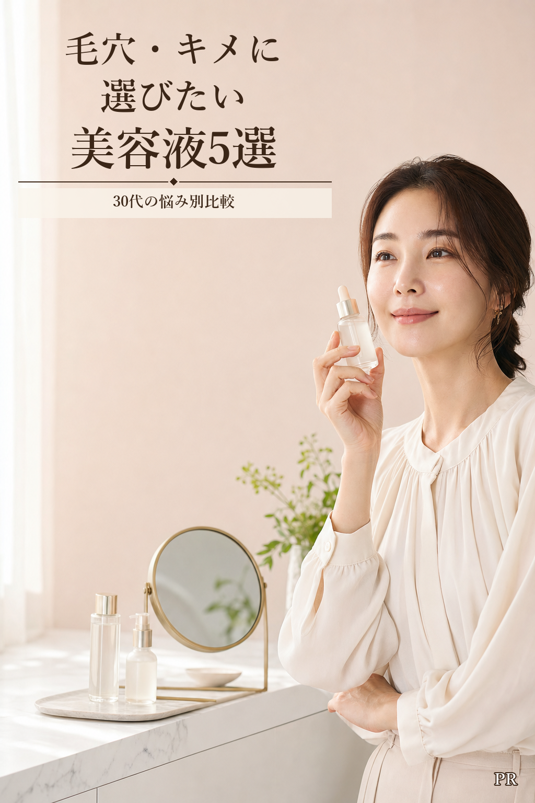

皮脂
薬用の皮脂ケアを選ぶならライース。

HOW TO CHOOSE
薬用の皮脂ケアを選ぶならライース。
価格より総合的な設計を重視するならオバジ。
ナイアシンアミド高配合で選ぶならCOSRX。
容量と価格のバランスならKISO。
スキンケアの最初に使うならVT。
OFFICIAL SPECS
公式情報と販売ページをもとに整理しています。
| 商品 | 容量 | 参考価格 | 選び方 | 使用タイミング | 購入状況 |
|---|---|---|---|---|---|
| ライース クリアセラムNo.6 | 30mL トライアル10mL | 5,500円 トライアル1,298円 | 薬用皮脂ケア | 朝・夜、化粧水の後 | A8提携審査中 |
| オバジC25セラム ネオ | 12mL | 希望小売価格11,000円 | ピュアビタミンC配合 | 朝・夜 | 楽天 |
| COSRX RX ザ・ナイアシンアミド15セラム | 20mL | 2,108円 | ナイアシンアミド15％ | 販売ページを確認 | 楽天公式店 |
| KISO ピュアエッセンス VC30 | 30mL | 1,773円 | 国産・ビタミンC誘導体 | 朝・夜、化粧水の後 | 楽天公式店 |
| VT リードルショット100 | 50mL | 販売ページで確認 | 毎日使える導入美容液 | 洗顔後、最初 | 楽天公式店 |
PRODUCT NOTES
割引・送料・在庫は変動します。購入画面の表示を優先してください。
ライスパワーNo.6を有効成分として配合。過剰な皮脂分泌を抑制する薬用美容液です。A8.netの提携承認後に購入導線を追加します。
うるおいを与え、毛穴の目立ちにくいなめらかな肌へ。模倣品対策のため、国内正規品表示と販売元を確認してください。
皮脂とキメを意識して成分で選びたい人に。楽天公式店の商品は韓国からの個人輸入扱いです。
ビタミンC誘導体30％、CICA、ヒアルロン酸を整肌・保湿成分として配合。化粧水の後に3〜4滴使います。
洗顔後の最初に使うブースター。製品特有の刺激があるため、肌の状態を確認しながら使用してください。